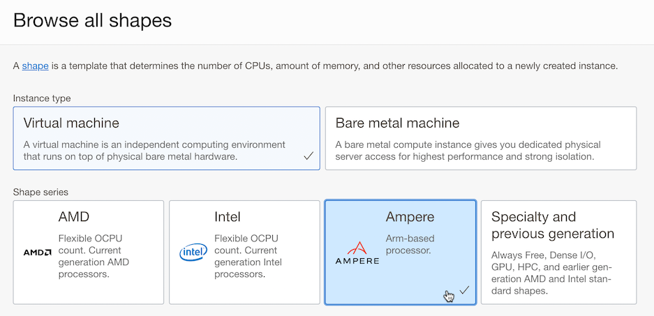
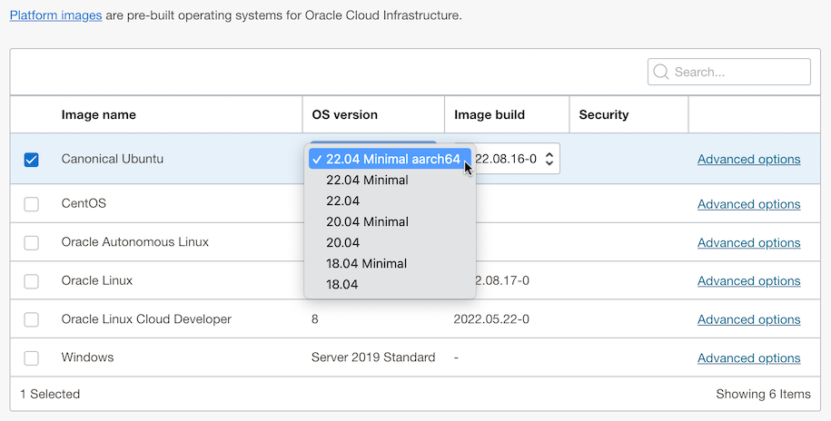
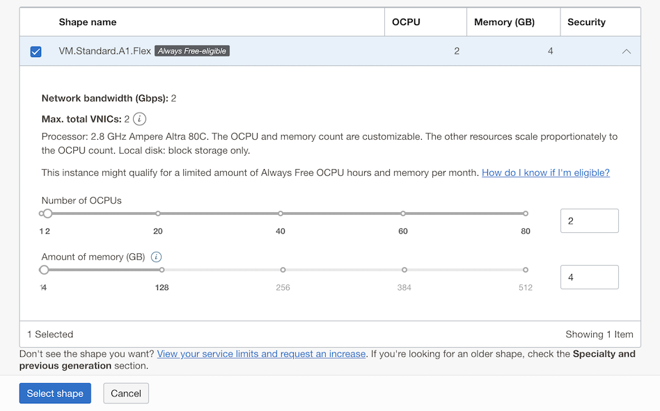
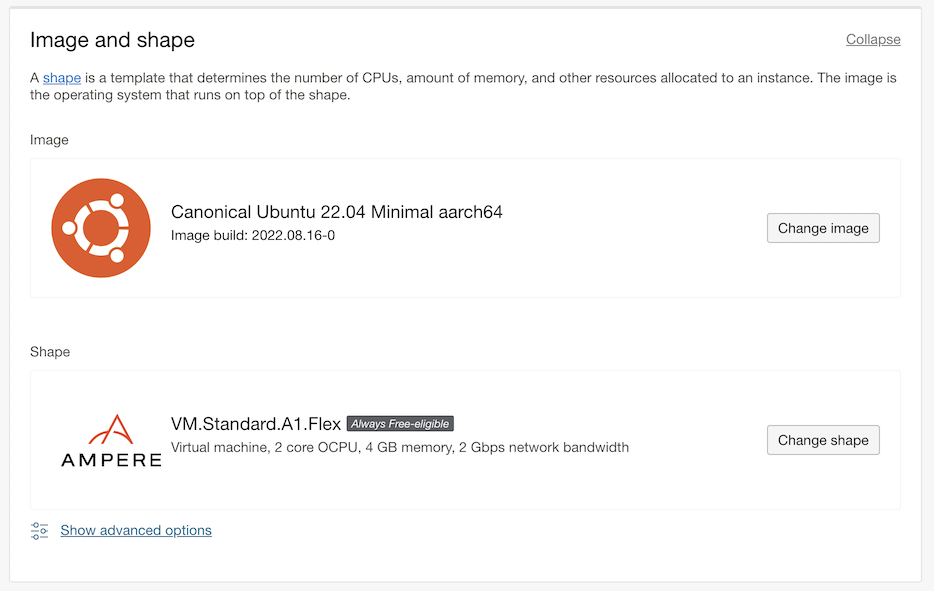
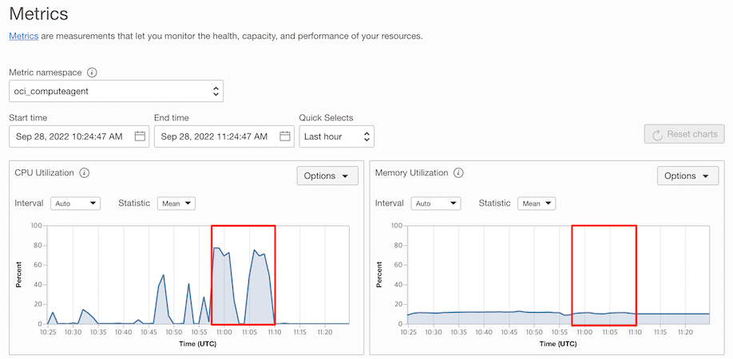

ARM 기반 서버 성능 비교: OCI vs. AWS
OCI Ampere Altra A1
오라클은 2021년 5월부터 Arm 기반의 Ampere A1 Compute Shape을 가상 머신에서 사용할 수 있습니다.
OCI Ampere A1 성능 측정 참고 문서
최근 API Gateway인 Apache APISIX 블로그에서 클라우드 ARM 기반 서버들의 성능을 비교하였습니다. 해당 내용을 기반으로 OCI에서도 최대한 유사한 환경을 구성하여 성능 측정을 한번 해보겠습니다.
- #1. June 7, 2022, Installation and performance testing of API Gateway Apache APISIX on AWS Graviton3
- #2. August 12, 2022, GCP, AWS, and Azure ARM-based server performance comparison
Step#1. ARM Ubuntu VM 생성
참고 문서에서 테스트한 환경
- AWS Graviton3: ARM 아키텍처 기반
- AWS EC2 c7g.large(2vCPU, 4GiB Memory)
- Ubuntu 20.04
-
OCI에서는 다음 환경을 구성합니다.
- OCI Ampere A1: ARM 아키텍처 기반
- VM.Standard.A1.Flex: 자유 구성이나, 동일하게 2OCPU, 4GB 메모리 선택
- Ubuntu 22.04 Minimal aarch64: 벤치마크 테스트 모듈 설치 오류 최소화를 위해 22.04 선택
-
Compute 인스턴스 생성 화면에서 Shape 유형을 Ampere로 선택합니다.

-
OS를 이미지를 Ubuntu로 변경하고, 기본 22.04 Minimal aarch64로 변경합니다.

-
하나 있는 VM.Standard.A1.Flex Shape을 선택합니다. A1이 Arm기반 Ampere A1을 뜻하며, Flex는 CPU, Memory 선택이 자유로운 것을 뜻합니다. 2 OCPU, 4GB 메모리를 선택합니다.

-
OS Image와 Arm 서버 Shape이 선택되었습니다.
- Network bandwith는 Flex Shape에서 OCPU 갯수에 따라 증가합니다.
- VM.Standard.A1.Flex의 Network bandwith는 OCPU 당 1 Gbps이고, 최대 40 Gbps 입니다.
- 2 OCPU가 선택되어, 그림과 같이 2 Gbps가 되었습니다.

-
이름, VCN, SSH Key 등 나머지는 원하는 값으로 지정하여 인스턴스를 생성합니다.
-
만든 인스턴스에 SSH로 접속합니다.
ssh ubuntu@<PUBLIC-IP-OF-COMPUTE-INSTANCE>
Step#2. ARM Ubuntu VM에 APISIX 설치
참고 문서: How to build APISIX in ARM Ubuntu
요구사항 설치
-
소스 코드 복제
sudo apt-get update sudo apt-get install git git clone https://github.com/apache/apisix.git cd apisix git checkout release/2.15 -
OpenResty를 설치합니다. Ubuntu 22.04, ARM에 맞게 설치합니다.
-
Step 1: we should install some prerequisites needed by adding GPG public keys (could be removed later):
sudo apt-get -y install --no-install-recommends wget gnupg ca-certificates- Step 2: import our GPG key:
# For ubuntu 22 wget -O - https://openresty.org/package/pubkey.gpg | sudo gpg --dearmor -o /usr/share/keyrings/openresty.gpg- Step 3: then add the our official APT repository.
# for arm64 or aarch64 system # For ubuntu 22 or above echo "deb [arch=$(dpkg --print-architecture) signed-by=/usr/share/keyrings/openresty.gpg] http://openresty.org/package/arm64/ubuntu $(lsb_release -sc) main" | sudo tee /etc/apt/sources.list.d/openresty.list > /dev/null- Step 4: update the APT index & install openresty
sudo apt-get update sudo apt-get -y install openresty -
Dependencies 설치
bash utils/install-dependencies.sh sudo apt install wget sudo unzip sudo apt-get install make gcc curl https://raw.githubusercontent.com/apache/apisix/master/utils/linux-install-luarocks.sh -sL | bash - LUAROCKS_SERVER=https://luarocks.cn make deps -
APISIX 설치
sudo make install
ETCD 설치
-
Docker 설치
sudo apt-get install docker.io -
etcd 시작
sudo docker run -d --name etcd -p 2379:2379 -e ETCD_UNSUPPORTED_ARCH=arm64 -e ETCD_LISTEN_CLIENT_URLS=http://0.0.0.0:2379 -e ETCD_ADVERTISE_CLIENT_URLS=http://0.0.0.0:2379 gcr.io/etcd-development/etcd:v3.5.1-arm64 -
확인 STATUS가 Up인지 확인합니다.
sudo docker ps -a
APISIX 시작
-
소스 코드 위치로 이동
cd ~/apisix -
Dependencies 설치
make deps sudo make install -
설정 추가
echo "ulimit -n 4096" >> ~/.bashrc source ~/.bashrc -
APISIX 시작
apisix init # start APISIX apisix start -
테스트 Route 등록
curl "http://127.0.0.1:9080/apisix/admin/routes/1" \ -H "X-API-KEY: edd1c9f034335f136f87ad84b625c8f1" -X PUT -d ' { "uri": "/anything/*", "upstream": { "type": "roundrobin", "nodes": { "httpbin.org:80": 1 } } }' -
테스트
curl -i http://127.0.0.1:9080/anything/das테스트 결과
HTTP/1.1 200 OK .....
Step#3. 성능 측정
성능 테스트는 참고 문서 #1에서 언급하고 있는 Apache APISIX 공식 벤치마크 스크립트을 사용하였습니다.
성능 측정 준비
-
생성한 ubuntu VM에 HTTP 벤치마크 툴인 wrk를 설치합니다.
sudo apt-get install wrk
측정 시나리오
아래 2가지 시나리오를 사용하였으며, 사용할 벤치마크 테스트 스크립트 안에 해당 내용이 들어 있습니다. 각 시나리오는 APISIX가 라우팅할 127.0.0.1:1980에서 서비스되는 Nginx 노드가 필요합니다. 테스트 스크립트 안에 그 부분도 포함되어 있습니다.
-
Scenario 1: Single upstream
- 참고 문서 #1의 첫번째 시나리오로 플러그인 없이, single upstream을 사용합니다. 순 proxy back-to-origin 모드에서 APISIX 성능 테스트 용도라고 합니다.
# apisix: 1 worker + 1 upstream + no plugin # register route curl http://127.0.0.1:9080/apisix/admin/routes/1 -H 'X-API-KEY: edd1c9f034335f136f87ad84b625c8f1' -X PUT -d ' { "uri": "/hello", "plugins": { }, "upstream": { "type": "roundrobin", "nodes": { "127.0.0.1:1980":1 } } }' -
Scenario 2: Single upstream + Two plugins
- 참고 문서 #1의 두번째 시나리오로 플러그인 2개, single upstream을 사용합니다. 2 코어 성능-소비 플러그인으로
limit-count와prometheus을 사용하여 APISIX 성능 테스트 용도라고 합니다.
# apisix: 1 worker + 1 upstream + 2 plugins (limit-count + prometheus) # register route curl http://127.0.0.1:9080/apisix/admin/routes/1 -H 'X-API-KEY: edd1c9f034335f136f87ad84b625c8f1' -X PUT -d ' { "uri": "/hello", "plugins": { "limit-count": { "count": 2000000000000, "time_window": 60, "rejected_code": 503, "key": "remote_addr" }, "prometheus": {} }, "upstream": { "type": "roundrobin", "nodes": { "127.0.0.1:1980":1 } } }' - 참고 문서 #1의 두번째 시나리오로 플러그인 2개, single upstream을 사용합니다. 2 코어 성능-소비 플러그인으로
벤치마크 테스트 스크립트 수행
-
소스 코드 위치로 이동
cd ~/apisix -
편집 툴 설치
sudo apt-get install vim -
백엔드 Nginx 기동을 확인하기 위해 ./benchmark/run.sh 스크립트의 103줄에 curl 명령을 추가합니다.
curl -i http://127.0.0.1:9080/hello wrk -d 5 -c 16 http://127.0.0.1:9080/hello -
./benchmark/run.sh 스크립트에서 테스트를 위해 부하 시간을 기본 5초에서 60초로 늘립니다.
-d 5를-d 60으로 변경합니다.wrk -d 60 -c 16 http://127.0.0.1:9080/hello -
벤치마크 스크립트를 수행합니다.
./benchmark/run.sh -
실행 결과
ubuntu@oci-arm-ubuntu-c2m4:~/apisix$ ./benchmark/run.sh + '[' -n '' ']' + worker_cnt=1 + '[' -n '' ']' + upstream_cnt=1 + mkdir -p benchmark/server/logs + mkdir -p benchmark/fake-apisix/logs + make init [ info ] init -> [ Start ] ... apisix: 1 worker + 1 upstream + no plugin + curl http://127.0.0.1:9080/apisix/admin/routes/1 -H 'X-API-KEY: edd1c9f034335f136f87ad84b625c8f1' -X PUT -d ' { "uri": "/hello", "plugins": { }, "upstream": { "type": "roundrobin", "nodes": { "127.0.0.1:1980":1 } } }' {"node":{"key":"\/apisix\/routes\/1","value":{"uri":"\/hello","update_time":1664362611,"plugins":{},"status":1,"create_time":1664361560,"priority":0,"upstream":{"scheme":"http","pass_host":"pass","nodes":{"127.0.0.1:1980":1},"hash_on":"vars","type":"roundrobin"},"id":"1"}},"action":"set"} + sleep 1 + curl -i http://127.0.0.1:9080/hello HTTP/1.1 200 OK Content-Type: text/plain; charset=utf-8 Transfer-Encoding: chunked Connection: keep-alive Date: Wed, 28 Sep 2022 10:56:52 GMT Server: APISIX/2.15.0 1234567890+ wrk -d 60 -c 16 http://127.0.0.1:9080/hello Running 1m test @ http://127.0.0.1:9080/hello 2 threads and 16 connections Thread Stats Avg Stdev Max +/- Stdev Latency 1.02ms 188.43us 13.83ms 97.08% Req/Sec 7.86k 505.69 8.73k 89.58% 938523 requests in 1.00m, 171.84MB read Requests/sec: 15640.38 Transfer/sec: 2.86MB + sleep 1 + wrk -d 60 -c 16 http://127.0.0.1:9080/hello Running 1m test @ http://127.0.0.1:9080/hello 2 threads and 16 connections Thread Stats Avg Stdev Max +/- Stdev Latency 1.03ms 112.62us 10.02ms 93.94% Req/Sec 7.82k 314.04 15.89k 88.01% 934559 requests in 1.00m, 171.12MB read Requests/sec: 15550.03 Transfer/sec: 2.85MB ... apisix: 1 worker + 1 upstream + 2 plugins (limit-count + prometheus) + curl http://127.0.0.1:9080/apisix/admin/routes/1 -H 'X-API-KEY: edd1c9f034335f136f87ad84b625c8f1' -X PUT -d ' { "uri": "/hello", "plugins": { "limit-count": { "count": 2000000000000, "time_window": 60, "rejected_code": 503, "key": "remote_addr" }, "prometheus": {} }, "upstream": { "type": "roundrobin", "nodes": { "127.0.0.1:1980":1 } } }' {"node":{"key":"\/apisix\/routes\/1","value":{"uri":"\/hello","update_time":1664362734,"plugins":{"limit-count":{"time_window":60,"key":"remote_addr","rejected_code":503,"count":2000000000000,"key_type":"var","policy":"local","allow_degradation":false,"show_limit_quota_header":true},"prometheus":{"prefer_name":false}},"status":1,"create_time":1664361560,"priority":0,"upstream":{"scheme":"http","pass_host":"pass","nodes":{"127.0.0.1:1980":1},"hash_on":"vars","type":"roundrobin"},"id":"1"}},"action":"set"} + sleep 3 + wrk -d 60 -c 16 http://127.0.0.1:9080/hello Running 1m test @ http://127.0.0.1:9080/hello 2 threads and 16 connections Thread Stats Avg Stdev Max +/- Stdev Latency 1.31ms 192.72us 17.15ms 95.50% Req/Sec 6.15k 294.98 6.71k 71.83% 734891 requests in 1.00m, 185.02MB read Requests/sec: 12248.00 Transfer/sec: 3.08MB + sleep 1 + wrk -d 60 -c 16 http://127.0.0.1:9080/hello Running 1m test @ http://127.0.0.1:9080/hello 2 threads and 16 connections Thread Stats Avg Stdev Max +/- Stdev Latency 1.30ms 141.40us 12.13ms 93.56% Req/Sec 6.17k 254.42 6.87k 64.83% 736422 requests in 1.00m, 185.41MB read Requests/sec: 12271.99 Transfer/sec: 3.09MB ...
성능 측정 결과
-
Scenario 1: Single upstream
- apisix: 1 worker + 1 upstream + no plugin 부분
항목 1차 2차 평균 Requests/sec (초당 요청건) 15640.38 15550.03 15595.205 Avg Latency (평균 응답지연) 1.02ms 1.03ms 1.025ms -
Scenario 2: Single upstream + Two plugins
- apisix: 1 worker + 1 upstream + 2 plugins (limit-count + prometheus)
항목 1차 2차 평균 Requests/sec (초당 요청건) 12248.00 12271.99 12259.995 Avg Latency (평균 응답지연) 1.31ms 1.30ms 1.305ms -
테스트시 CPU, Memory 상태
- CPU: 부하로 인해 백엔드 Nginx Worker 프로세스가 CPU를 많이 사용하고 있음
- Memory: Nginx 단순 웹페이지라 메모리는 크게 사용하지 않음 
비용대비 성능 비교
OCI Arm 기반 Shape
- VM, Bare Metal 모두 Ampere A1을 지원하며, VM에서는 Flex Shape의 하나로 제공
Shape Maximum OCPUs Minimum Memory Maximum Memory VM.Standard.A1.Flex 80 1 GB 또는 OCPU 갯수, 둘 중 큰 값 OCPU 당 64 GB, 총합 최대 512 GB
OCI Arm 기반 가상 머신 비용
- OCI Ampere A1 Compute
- https://www.oracle.com/cloud/compute/arm/
- Arm CPU 아키텍처(Ampere)에서는 1 OCPU = 1 vCPU 입니다.
- Cloud Account내 Ampere A1 shape의 매달 전체 사용량 중에 첫 3,000 OCPU-시간과 첫 18,000 GB-시간 까지는 무료입니다.
- Flex Shape으로 OCPU와 Memory를 조정할 수 있어, 각각 단위 비용이 있습니다.
- OCI는 모든 리전이 가격이 동일합니다.
Compute - Virtual Machine Instances Comparison Price ( /vCPU)* Unit Price Unit Compute – Ampere A1 – OCPU $0.01 $0.01 시간당 OCPU Compute – Ampere A1 – Memory - $0.0015 시간당 기가바이트
벤치마크 테스트 관련 비용 비교
비교 조건
- ARM 서버 기준입니다.
- AWS: C7g (US East Ohio) 기준 시간당 비용입니다.
- OCI: VM.Standard.A1.Flex 기준 시간당 비용입니다.
- OCI는 모든 리전이 가격이 동일합니다.
- 비교를 위해 AWS C7g와 같은 크기의 CPU, Memory로 비교한 가격입니다.
- VM.Standard.A1.Flex 가격은 CPU 가격과 Memory 가격의 합입니다.
시간당 비용
| VM series / vCPU(Memory) | 1 (2G) | 2 (4G) | 4 (8G) | 8 (16G) | 16 (32G) | 32 (64G) | 64 (128G) |
|---|---|---|---|---|---|---|---|
| AWS C7g | $0.0361 | $0.0723 | $0.1445 | $0.289 | $0.5781 | $1.1562 | $1.7342 |
| OCI Ampere A1 | $0.013 | $0.026 | $0.052 | $0.104 | $0.208 | $0.416 | $0.832 |
연간 비용: 테스트 시나리오 1 기준
- QPS (queries per second): 초당 요청 처리 건수
- AWS c7g.large의 QPS는 참조 문서 #1, #2 결과 기준
- 참조 문서 #1, #2를 참고하여 최대한 동일한 구성으로 테스트하였으나, 참조 문서의 최종 부하 요청, 그 당시 자원 사용량을 알 수 없으므로, 아래 성능 및 비용 대비 성능은 절대적인 것이 아닌 참고용입니다.
- OCI Flex Shape은 구성이 자유로우므로 OCPU는 2개 그대로하고 사용량이 적은 Memory를 2GB로 구성하는 것도 가능합니다.
| 시간당 비용 | 일년(24*365) 총 시간 | Annual Cost | QPS | Cost Performance(QPS/cost) | |
|---|---|---|---|---|---|
| AWS c7g.large | $0.0723 | 8760 시간 | $633.3 | 23000 | 36.3 |
| OCI VM.Standard.A1.Flex 2 OCPU, 4 GB Memory | $0.026 | 8760 시간 | $227.8 | 15595.205 | 68.5 |
| OCI VM.Standard.A1.Flex 2 OCPU, 2 GB Memory | $0.023 | 8760 시간 | $201.5 | 15595.205 | 77.4 |
테넌트내 테스트 환경만 사용한다는 가정하에 무료 제공량 제외시
- Cloud Account내 Ampere A1 shape의 매달 전체 사용량 중에 첫 3,000 OCPU-시간과 첫 18,000 GB-시간 까지는 무료입니다.
- 한달 최대 사용 시간: 24시간 * 31일 = 744시간
| 한달 최대 사용량 | 무료 제외후 한달 사용량 | 일년 사용량 | Unit Price | Annual Cost | |
|---|---|---|---|---|---|
| OCI VM.Standard.A1.Flex 2 OCPU | 1,488 OCPU-시간 | 0 OCPU-시간 | 0 | $0.01 | $0 |
| OCI VM.Standard.A1.Flex 4 GB Memory | 2,976 GB-시간 | 0 GB-시간 | 0 | $0.0015 | $0 |
이 글은 개인으로서, 개인의 시간을 할애하여 작성된 글입니다. 글의 내용에 오류가 있을 수 있으며, 글 속의 의견은 개인적인 의견입니다.